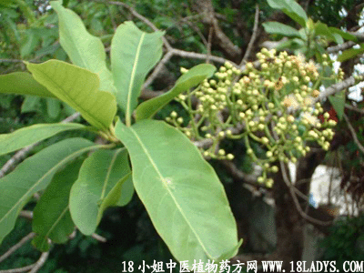

(本文解释权归中药材天地网兄弟站-中药大全-中医植物药方网所有,如需转载请注明出处)

植物名：水榕。
生长环境：本品为大乔木，喜生于水边。
分布：我国南部，广州附近村落旁不时可见。
入药部分：花。
采集期：夏。
自采地点：家种。
性味：性凉、味甘苦。
功能：解暑热、消滞、去肠胃湿热。
主治、用量和用法：1、癍痧发热：干花3钱至1两、清水煎服；2、暑热头痛：用法同上；3、食滞：干花3钱至于1两，请水煎服；或加布渣叶3至5钱同煎服。
验方：（治癍痧热方）水翁花5钱、狗干菜2两、清水四碗；或加布渣叶3至5钱同煎服。
验方：（治癍痧发热方）水翁花5钱、狗干菜2两、清水四碗、煎城一碗服。
（方解）方中狗干菜清里热，水翁花清表热。药虽两味，有表里双解之效。
（方歌）发大热症出癍痧，解除表热水翁花。加入狗干菜同煎，表里双解效堪夸。
附录：（根）治疝气：干用5钱至1两半，清水煎服。
（叶）1、治乳痈：生用4两，擂烂，加酒炖40分钟、去渣内服。将渣热敷患处；2、皮肤痕痒、疥疮：生用适量，煎水外洗；3、猪发热：生用1斤，煎水和饲食。
参考子来哦：《临床实用中药》功效：（花）清热解暑、治暑天感冒发热烦渴，及消食滞，治湿热下痢；（皮）治疥藓、止痒、香港脚；（枝）消暑、清热、作凉茶配料；（叶）乳痈；（子）熟至黑可食。
《广东中医验方选集第一集》东莞麻风防治站，曾以水翁树皮治疗麻风病人水肿、用之在患部净洗二、三次。水肿逐渐消失。共治50多例，功效甚好。处方：水翁树皮1斤，煮沸，温洗患处。
(本文解释权归中药材天地网兄弟站-中药大全-中医植物药方网所有,如需转载请注明出处)